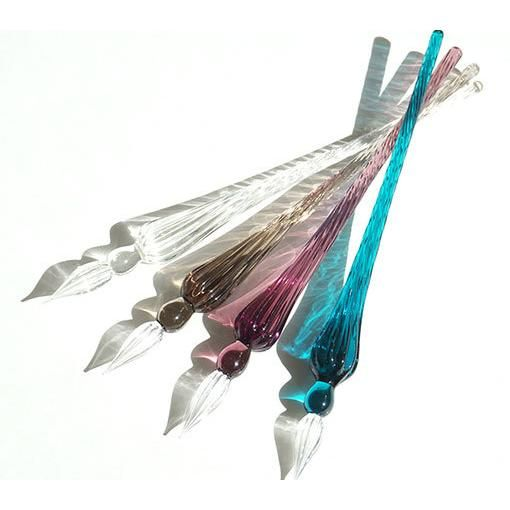
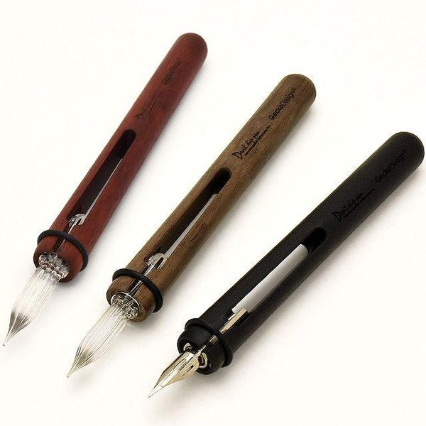

クリームソーダシリーズ
100円ショップで買えるガラスペン
本格的なガラスペン
インクや紙について
トップへ
高級品！？本格的なガラスペン
もちろん、お値段が少し張る本格的なガラスペンもあります。
ペン先と持ち手が一体型になっているもの、
分離型になっているものや
柄の長さや色、ペン先の形状など様々なので
お好みのものを見つけてみてください☆
今回は二種類ほど紹介します！
ガラスペン つむぎ新色 全4色(Herbin)/Herbin(エルバン)

フランス・パリ生まれの「Herbin（エルバン）」は、
ルイ14世が統治していた時代の1640年に創業した、
インクと手紙や文章を封印するシーリングワックスのブランドです。
フランスでインクといえば「エルバン」と言われるほど
メジャーなブランドで人々から親しまれています。
「ガラスペン つむぎ新色 全4色 (Herbin)」は、
なめらかな螺旋が美しいガラスペン！
指に当たる部分がふっくらとして持ちやすく、
書き心地の良さが特徴です。
デビル ディップペン GD-GDB-DV ガラスペン/gecko design

「GeckoDesign（ゲッコーデザイン） 」は、
2012年に設立したデザイナーズ集団です。
シンプル且つ、遊び心あふれるデザインで生活を彩る製品を開発し、
「DESIGN TOKYO大賞2018」で優秀賞を受賞した他、
アジアで権威のあるデザインアワード「2018 Golden Pin」では、
デザイン賞も受賞しました。
「デビル ディップペン GD-GDB-DV ガラスペン 」は、
握りやすい木製の持ち手は3カラーから選べます。
それぞれのパーツが保管できるのでギフトにも最適です。